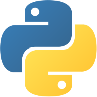

Hello.
i am a recent MSc graduate, where i studied an emerging field of data science (metabolomics)
in the course of my studies, I found a passion for creating things with programming
My Skills

Python
I initially learned python to make use of pandas, numpy and matplotlib to generate and harness machine learning models,
process, clean, and visualize my metabolomics dataset. Along the way, I decided to devote at least an hour a day to engineering a project, for 100 days straight.
As a result, I am extremely comfortable with python and object-oriented programming.
R
R is the gold-standard programming language for academia. As such, I have been an avid user of R for 4+ years.
My interest in R for statistical analyses, machine learning and data visualization began whilst I was conducting my honours research thesis.
During the course of my MSc, I have trained and utilized machine learning models varying in complexity (from linear regression, all the way to neural networks) using datasets from Kaggle, ISLR and the UCI ML Repository.
SQL
I enjoy using all kinds of SQL, though postgreSQL is my favourite.
I have been using it for 2 years, completely out of interest in it and a yearning to be able to control/utilize relational database systems which sometimes contain millions of rows.
The server for my main website is completely made in python, allowing for data exploration/manipulation to be preformed with Psycopg2 (PostgreSQL module).
HTML5
I have worked with HTML5 for 1 year and I utilized HTML5 to form the foundation of this and my main website.
CSS3
I have utilized CSS3 for 1 year was utilized to stylize this and my main website
Java
I have been working with java for 2 years, so as to execute scripts to apply machine learning models to my
raw spectral dataset in MZMine, through a unix Biocluster. Additionally, I have utilized it to provide all fo the functionality of my main website.
Education
University of Ottawa/d'Université d'Ottawa
MSc Student, Master of Chemistry
Specializing in Metabolomics
September 2019 - Present
Carleton University
Honours Bachelors of Science,
Major in Biology, Minor in Chemistry
September 2014 - May 2019
Work Experience
Research Assistant
Sept 2019 - Present
- Conducted cutting-edge research on the forefront of an emerging field of Data Science (Metabolomics)
- Led a multi-disciplinary project using techniques of analytical chemistry, genomics, and computer science to understand the profile of metabolic features derived from previously uncharacterized fungal species
- Pre-processed big datasets (TBs in size) of raw spectral information with Java scripts through a dedicated high-performance Unix Biocluster
- Utilized R, and Python to generate and harness machine learning models to analyze, visualize and reveal hidden trends in big data
- Effectively collaborated with laboratories and professionals of diverse disciplines so as to drive maximal progression of working projects
- Published peer-reviewed literature in collaboration with researchers at AAFC/AAC and uOttawa
Research Affiliate Position
Oct 2018 - Present
- Part-time research position working in the laboratories of AAFC/AAC
- Contributed to a project assessing the synergistic effects of several mycotoxins which pose a risk to human health, affecting crops of global economic importance
- Pre-processed big datasets (TBs in size) of raw spectral information with Java scripts through a dedicated high-performance Unix Biocluster
- Utilized R to clean, process, analyze and visualize the generated data
- Led a project with the goal of obtaining a certain natural product with a worth of $45,000
Postgraduate Teaching Assistant
Sept 2019 - May 2020
- Served as a Lab Monitor, Demonstrator, and Corrector for several 2nd, 3rd and 4th year courses of Organic Chemistry, Biochemistry, Pathological Chemistry, and Genomics
- Communicated the complicated topics and methodology of the weekly projects to groups of students (100+ per session)
- Led large groups of students through the weekly experimentation, ensuring the labs were preformed efficiently and safely
- Managed the grading and provision of feedback for students’ submissions, mid-terms, and final examinations in a timely fashion
- Closely communicated with lab coordinators and the head of the department to improve the quality and assessment of the lab sessions and examinations
Independent Undergraduate Research Project
August 2017 - April 2018
- Executed a competitive independent project funded through a nation-wide program which is awarded to less than 30 people per year (NSERC CREATE-REACT)
- Performed research in the cancer research (Genetic Toxicology) laboratories
- Contributed immensely to the validation process of a cell-based assay for cancer/mutagenicity screening which would serve as a cost-effective alternative to animal testing
- Led a project to miniaturize the assay, in turn, making its scalable and applicable to screening the mutagenic potential of biopharmaceutical products
- Utilized R for generating and harnessing complex models for statistical analyses
Certifications/Awards
- Government of Canada – Reliability Status
- NSERC CREATE-REACT Research Grant
- 100 Days of Python – AppBrewery
- The Complete Data Science and Machine Learning Bootcamp – AppBrewery
- Complete Python Developer in 2021 – ZTM
- Data Science and Machine Learning Bootcamp in R – Pierian Data Inc
- Complete SQL Bootcamp 2021 - Pierian Data Inc